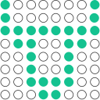
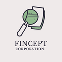
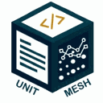
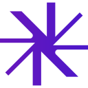

Research and report agents for building multi-agent systems
Agents that search, read many sources and return a cited answer or report. Of the 170 tools on our building multi-agent systems page, 18 fit this narrower job. By pricing: 15 open source, 2 free or freemium, 1 paid, usage-based or enterprise. The most-starred open repos here are TradingAgents (123,235 stars), ChatDev (34,616 stars), FinceptTerminal (33,795 stars). Most come from the research (5), frameworks (3), coding (3) categories.
Updated

TradingAgents
TradingAgents is Tauric Research's Apache-2.0 multi-agent framework for market research. The repository homepage, tauric.ai, describes market and filing data, agentic research, and one API plus an MCP server for Claude, ChatGPT, Claude Code, Codex and other assistants. GitHub listed 123,235 stars on 20 Nov 2026. This listing does not quote a hosted API price; none was published as a rate card on the homepage that day.
Added
ChatDev
ChatDev is an Apache-2.0 multi-agent platform from OpenBMB and Tsinghua. ChatDev 2.0 (DevAll) is a zero-code system: you define agents, workflows and tasks in configuration and it orchestrates them for jobs such as data visualization, 3D generation and deep research. The original ChatDev 1.0, kept as a legacy mode, simulates a virtual software company where CEO, CTO, programmer and tester agents design, code, test and document an app through structured chats.
Added

FinceptTerminal
Fincept Terminal is an AGPL-3.0 desktop finance terminal for market analytics, investment research and economic data, with multi-agent AI research, portfolio tools, backtesting and data from hundreds of sources in one interface. The open-source edition is free; a paid Enterprise edition adds real-time data, live broker and algorithmic execution and priority support from $15 per user a month.
Added
GPT Researcher
GPT Researcher is an Apache-2.0 open deep-research agent that investigates any topic on the web or in your local documents and writes a detailed, cited report. Planner and execution agents split the task into research questions and run them in parallel, context filtering keeps only useful sources, recursive deep research goes both broad and deep, and a multi-agent mode carries work from planning to publication. It works with most LLM providers and runs as a Python package, Docker app, web UI or MCP server.
Added
DeepCode
Open agentic coding system that turns papers and specs into code with multi-agent orchestration.
Added
GSD Core
GSD Core is a spec-driven development and context-engineering framework that runs Claude Code, Codex, Cursor, Copilot and other coding agents through a discuss, plan, execute, verify and ship loop, doing heavy research and execution in fresh-context subagents to avoid context rot.
Added

AutoDev
Multi-agent development platform built on Kotlin Multiplatform for research, coding, review and data queries across IntelliJ, VS Code, CLI and more.
Added
Paper2Agent
Multi-agent system that turns a research paper and its code into a working MCP server and agent skills you can query and run.
Added
open-kritt
A self-hosted AI security research tool that orchestrates agents to hunt for vulnerabilities in a codebase and then validate and rank what they find; managed scans are also offered.
Added
Pentest AI Agents
Turn Claude Code into your offensive security research assistant. Specialized AI subagents for authorized penetration testing plan engagements, analyze recon, research exploits, build detections.
Added
CORAL
CORAL is an Apache-2.0 framework for autoresearch with coding agents. The README says it runs Claude Code, OpenCode and Codex with grading, shared knowledge and multi-agent evolution. The repo description says the work was accepted at COLM 2026. GitHub Human-Agent-Society/CORAL recorded Apache-2.0, 1,152 stars and 145 forks on 25 Nov 2026.
Added
Academic Commercialization Agent
Academic Commercialization Agent is an open-source agent project that helps builders handle AI multi-agent tool that turns research papers into cited commercialization and tech-transfer.
Added
HunterCode Community
HunterCode Community Edition is an Apache-2.0, self-hosted multi-agent investment research terminal for China A-shares, Hong Kong and US stocks, positioned as a local alternative to Tencent WorkBuddy's finance edition. It bundles 20 MCP services with 69 tools and 22 finance skills for market data, technical indicators, fundamentals and research reports, runs inference with your own model keys, keeps positions and conversations on your own machine and deploys with docker compose.
Added
Designing Real World Ai Agents Workshop
Designing Real World Ai Agents Workshop is an open-source agent project that helps builders handle hands-on workshop: Build a multi-agent AI system from scratch — Deep Research.
Added
Grok Bot Jev Router
Grok Bot Jev Router is an open-source Python reference router that puts TypeSafe Jev in front of Grok Bot as a cheap decision layer. Before expensive research, browser, retry or subagent work, Jev classifies the request and returns an explicit action such as reuse a cached result, stop a failing retry, cap research, run a deterministic step, or ask a human. It starts in shadow mode that only logs decisions, has an active mode for a Grok Bot skill that honors them, and includes a kill switch. It never sends, pays or deletes anything itself.
Added

Crewdle
Hire autonomous agents and teams for support, sales, bookkeeping and research, paid per task.
Added
Google Deep Review
Google Research's multi-agent system that checks research papers, design docs, and legal or financial documents for logical gaps and unsupported claims.
Added
Postellite
Postellite is a multi-agent AI marketing platform for research, SEO writing, scheduling and publishing with client workspaces and approval controls.
Added
GitHub repos (15)
| Repo | GitHub stars | Licence | Last push |
|---|---|---|---|
| TradingAgents ↗ | 123,235 | — | — |
| 34,616 | Apache License 2.0 | 2026-10-30 | |
| FinceptTerminal ↗ | 33,795 | — | — |
| 30,378 | Apache License 2.0 | 2026-10-10 | |
| 16,773 | MIT | 2026-10-29 | |
| GSD Core ↗ | 11,346 | — | — |
| AutoDev ↗ | 4,562 | Mozilla Public License 2.0 | 2026-09-25 |
| 3,914 | MIT | 2026-09-17 | |
| open-kritt ↗ | 2,389 | — | 2026-10-28 |
| Pentest AI Agents ↗ | 2,384 | — | 2026-08-16 |
| CORAL ↗ | 1,152 | — | — |
| Academic Commercialization Agent ↗ | 810 | — | — |
| 611 | — | — | |
| Designing Real World Ai Agents Workshop ↗ | 521 | — | — |
| Grok Bot Jev Router ↗ | 124 | — | 2026-09-28 |
15 repos. Stars and licence come from each repo, checked when the listing was last verified.
FAQ
What are the best AI tools for building multi-agent systems focused on research and reports?
We list 18. The first three by GitHub stars and featured status are TradingAgents: TradingAgents is Tauric Research's Apache-2.0 multi-agent framework for market research. The repository homepage, tauric.ai, describes market and filing data, agentic research, and one API plus an MCP server for Claude, ChatGPT, Claude Code, Codex and other assistants. GitHub listed 123,235 stars on 20 Nov 2026. This listing does not quote a hosted API price; none was published as a rate card on the homepage that day.; ChatDev: ChatDev is an Apache-2.0 multi-agent platform from OpenBMB and Tsinghua. ChatDev 2.0 (DevAll) is a zero-code system: you define agents, workflows and tasks in configuration and it orchestrates them for jobs such as data visualization, 3D generation and deep research. The original ChatDev 1.0, kept as a legacy mode, simulates a virtual software company where CEO, CTO, programmer and tester agents design, code, test and document an app through structured chats.; FinceptTerminal: Fincept Terminal is an AGPL-3.0 desktop finance terminal for market analytics, investment research and economic data, with multi-agent AI research, portfolio tools, backtesting and data from hundreds of sources in one interface. The open-source edition is free; a paid Enterprise edition adds real-time data, live broker and algorithmic execution and priority support from $15 per user a month.
Are there free or open-source options?
Yes: 15 open source, 2 free or freemium, 1 paid, usage-based or enterprise. Pricing is as each maker states it.
More from building multi-agent systems
Tools are grouped by what each says it does. Missing one? Submit it free.